Example of a local feature matching.
In this project, I used feature matching on several pairs of image and got different outcomes. Basic method includes Harris Corner detection, SIFT for feature description and Nearest Neighbor Distance Ratio for feature matching. The whole containt can be devided as follows:
There are two sections to leave out the unlikely matches in the whole project. The first is in Get interest point, after selecting local points above the threshold value, ANMS is used to better the distribution of interest points. The second is in Match features, where NNDR is used to avoid mismatch due to periodic or symetrical regions. As a result, to supress the bad matches, the choice of parameter will make the number of total matched points below 100. (It can also be the side effect of the match possibility of origin products of Harris Corner Detection).
The following are the details of evey step.
Second momentum matrix.
The main function of this section is to find the corners in original pictures. It is consisted of Harris Corner Detection and Adaptive Non-maximum Supression.
In Harris Corner detection, for second momentum matrix, I used DoG function (sigma=1) to calculate Ix and Iy matrix as follows:
L=5;%size of Laplatian of Gaussian;
devi=1;%standard deviation;
c=(L+1)/2;
log_filter_x=zeros(L,L);
log_filter_y=zeros(L,L);
for i=1:1:L
for j=1:1:L
common=exp(-((j-c)^2+(i-c)^2)/(2*devi^2));
log_filter_x(i,j)= -1*(j-c)/(devi^2)*common;
log_filter_y(i,j)= -1*(i-c)/(devi^2)*common;
end
end
...
I_x=imfilter(image,log_filter_x,'same'); %get Ix
I_y=imfilter(image,log_filter_y,'same'); %get Iy
A11=I_x.*I_x;
A12=I_y.*I_x;
A22=I_y.*I_y;
%biger Gaussian for window (wighing) function
w=fspecial('gaussian',6,1);
A11_w=imfilter(A11,w,'same');
A12_w=imfilter(A12,w,'same');
A22_w=imfilter(A22,w,'same');
R = ((A11_w.*A22_w-A12_w.^2)./(A11_w+A22_w+eps));
%% second momentum matrix is R
I didn't use R = (A11_w.*A22_w-A12_w.^2)- alpha*(A11_w^2+A22_w^2), because this approximation didn't work well in my case and would produce negative values.
Then search for the first list of interest point, by simply selecting the local maximums with value over threshold. Notice that some operator symbols in MATLAB are illegal in Sublime (what I'm using for this html file), I just replace them with words to clarify.
M = ordfilt2(R,feature_width^2,ones(feature_width));
R = (R==M) 'and' M > threshold;
[y,x] = find(R);
After finding this first list, to ensure better distribution, I applied ANMS to rid of the points too in high density regions.
Number=800;
thresholdh=0.8; %%-------ORIGIN 0.8
Rind=1; %the rate R increases
%thresholdl=0.8;
while length(x)>Number
k=1;
while k 'smaller than' length(x)
xcor=x(k);
ycor=y(k);
xmin=max(1,xcor-Rind);
ymin=max(1,ycor-Rind);
xmax=min(xran,xcor+Rind);
ymax=min(yran,ycor+Rind); %% change Radious to Rind for every point
temp3=R(ymin:ymax,xmin:xmax);
temp3=temp3-thresholdh*R_result(k); %% find if there is any other surrounding point with similar value
ind=find(temp3>0); %% if so, delete the current point
if length(ind)>1 %% for better distribution in the whole image
if k~=1 'as well as' k~=length(x)
x=[x(1:(k-1));x((k+1):end)];
y=[y(1:(k-1));y((k+1):end)];
R_result=[R_result(1:k-1),R_result((k+1):end)];
else
if k==1
x=x(2:end);
y=y(2:end);
R_result=R_result(2:end);
else
x=x(1:end-1);
y=y(1:end-1);
R_result=R_result(1:end-1);
end
end
else
end
end
Rind=Rind+1; % the step can be varied to the trade-off between speed and accuracy
end
The interest point findings of Notre Dame images can be shown as follow.
| 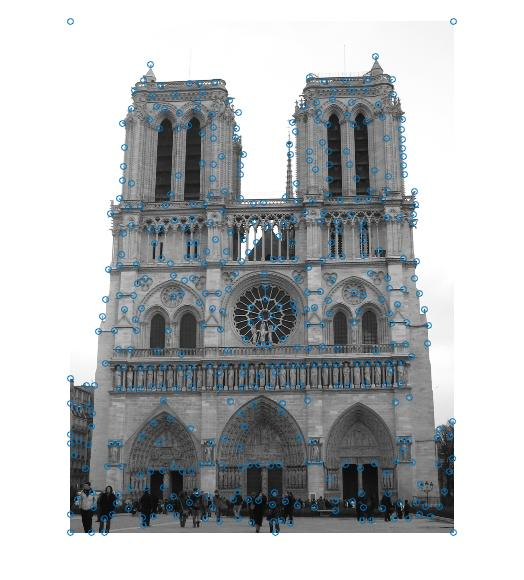 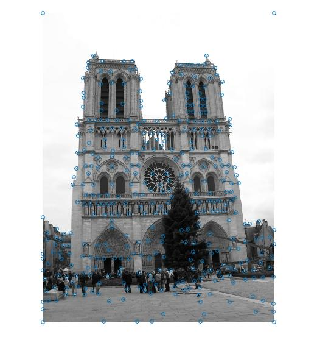 |
The interest point findings of Mont Rushmore images can be shown as follow.
| 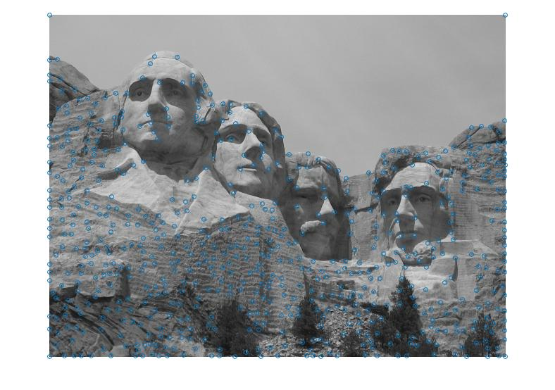 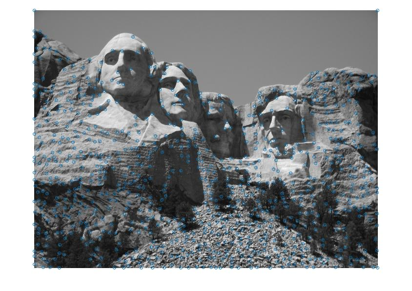 |
The interest point findings of Capricho Gaudi images can be shown as follow.
| 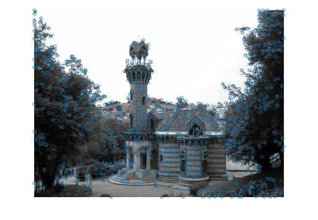 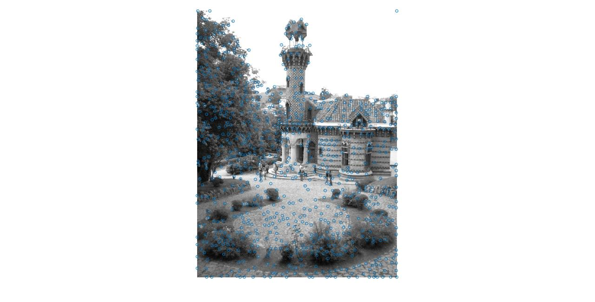 |
The interest point findings of Patheon Paris images can be shown as follow.
| 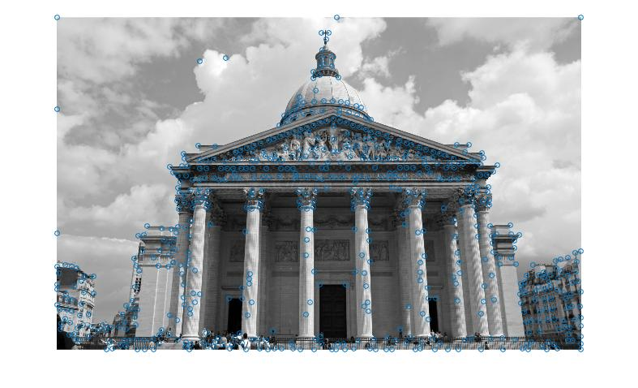 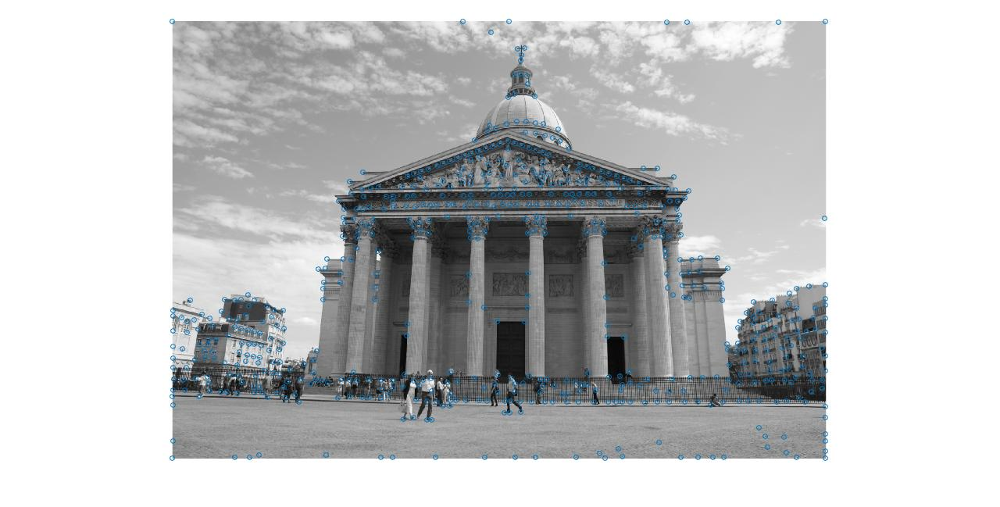 |
From the above, we can find that there are some interest points located at the edge of the image. This comes from the defections of images, and they will be deleted naturally in the following section.
SIFT feature.
In this section, SIFT is used to substract feature information from insterest points:
Find surrounding 16*16 pixels. For those doesn't have enough 16*16 surroundings, delete them from the list (Hence get rid of the insterest points at the edges). Here I combined step(1) and (2) to use 1 dimensional Guassian and DOG filter to get smoothed Ix and Iy directly. (Ix and Iy is the partial differential along x and y direction)
sigma=1;
L=ceil(3*sigma);
F =(-L:1:L);
G = exp(-(F.^2)/(2*sigma^2));
GD = -(F./sigma).*exp(-(F.^2)/(2*sigma^2));
%% construct gaussian and difference of gaussian filters
...
for k=1:1:Number
xc=x(k);
yc=y(k);
slice=image((yc-7):(yc+8),(xc-7):(xc+8));
%% k is the number of feature point, slice is the segment of image arround point k
I_x=zeros(16,16);
I_y=zeros(16,16);
for i=1:4:13
for j=1:4:13
I_x(i:(i+3),j:(j+3))=imfilter(imfilter(slice(i:(i+3),j:(j+3)),GD,'same'),(G'),'same');
I_y(i:(i+3),j:(j+3))=imfilter(imfilter(slice(i:(i+3),j:(j+3)),G,'same'),(GD'),'same');
% for every 4*4 window (window size 4*4 pixel), use one dimensional GD and G filters to get smoothed Ix and Iy
end
end
...
end
For the gradient calculation, instead of using orienteering filters or arctan function, I use the projection of vector on different angle units. A unit vector of theta is (cos(theta),sin(theta)), and the projection is inner product of two vectors. The gradient along direction theta, can be calculated by "cos(theta(n))*I_x+sin(theta(n))*I_y". Also consider the Gaussian weighting in the whole 16*16 segment:
%%---------gaussian weighing--------
sigma2=8;
xa=(1:1:16)-8.5;
ya=(1:1:16)-8.5;
[YY,XX]= meshgrid(ya,xa);
Gweight= exp(-((XX).^2+(YY).^2)/(2*sigma2^2));
%% weight for the slice
...
for k=1:1:Number
...
gradient_raw=zeros(16,16,8);
for n=1:1:8
gradient_raw(:,:,n)=Gweight.*(cos(theta(n))*I_x+sin(theta(n))*I_y);
end
...
end
As for interpolation, for each pixel consider it's contribution to nearest 4neighbors(with 4*4size) and 2 direction, ie. 8 contributions in total. Hence, I selected the two major component of each pixel's gradient vector and leave the rest to be zero. Hence, for 4*4 window calculation.
for k=1:1:Number
...
for m=1:1:16
for l=1:1:16
temp1=gradient_raw(m,l,:);
[temp2,ind1]=sort(temp1);
temp1=zeros(1,8);
temp1(ind1(7))=temp2(7);
temp1(ind1(8))=temp2(8); %select the two major component
gradient_raw(m,l,:)=temp1;
end
end
for n=1:1:8
for m=1:1:4
for l=1:1:4
features_raw2(k,((m-1)*4+l-1)*8+n)=3/4*sum(sum(gradient_raw( (m*4-3):(m*4),...
(l*4-3):(l*4),n )))...+ 1/4*sum(sum(gradient_raw( (max(m*4-5,1)):(min(m*4+2,...
16)),(max(l*4-5,1)):(min(l*4+2,16)),n )));
%% add up the contributions from surrounding windows
end
end
end
%raw2 complete
...
end
To avoid the excessive influence of strong intensity features, normalize the 128 dimensional feature vector, then elevate the whole vector by threshold(0.2).
...
Vthresh=0.2; %all value elevated by 0.2
for k=1:1:Number
Vmin=min(features_raw2(k,:));
Vmax=max(features_raw2(k,:));
features(k,:)= (features_raw2(k,:)-Vmin).* (1-Vthresh)./(Vmax-Vmin) +Vthresh;
end
...
Making the distance of 128 dimensional vector to be 1 is another normalization method, but it didn't work in my case, since many of its outcome are 'NAN' in MATLAB.
Above is the process of SIFT, there are no visualized outcome in this section.
Matching features is generally based on the distance between features. The smaller the feature is, the more likely that pair of features to be a good match. However, considering the repetitive or symmetrical characteristics of the image, only judging by minmum distance is not reliable. Here I used Nearest Neighbor Distance Ratio to rid of mismatch due to these situations. The basic point is to limit the ratio of minimum and second minimum distance( of potential match).
...
NNDR_thresh=0.9; % Here I use minimum distance/ second minimum distance
...
ind1=(1:1:num_features1); % ind1 and ind2 is the position of current unmatched points
ind2=(1:1:num_features2);
...
flag=1; % flag is for jump out the loop when rest possible matches won't meet the threshold of NNDR
...
while ~isempty(ind1) 'and' ~isempty(ind2) 'and' flag~=0
%% find min point
minv=min(min(Distance(ind1,ind2))); % find the current minimum distance in unmatched points
[ypos,xpos]=find(Distance(ind1,ind2)==min(min(Distance(ind1,ind2))));
min1=minv(1);
if min1>MaxBound %% means the rest matches should not be concerned.
break;
else
end
xpos1=xpos(1); % xpos1 and ypos1 is the NO. of interest points in image2 and image1
ypos1=ypos(1); % but notice that they are selected from ind1 and ind2, hence the
% origin points are ind1(ypos1) and ind2(xpos1)
%% look for second min point in both row and colum (ie, both in image1 and image2)
[temp1,pos21]=sort(Distance(ind1(ypos1),ind2));%search in row
[temp2,pos22]=sort(Distance(ind1,ind2(xpos1)));
if length(temp1)>1 'and' length(temp2)>1 % find potential second minimum matches
if temp1(2)>=temp2(2) %if true another point in feature 2 is selected as second minimum
min2=temp2(2)'; %otherwise another point in feature 1 is selected as second minimum
xpos2=xpos1;
ypos2=ind1(pos22(2)');
else
min2=temp1(2);
xpos2=ind2(pos21(2));
ypos2=ypos1;
end
else
if length(temp1)==1
min2=temp2(2)';
xpos2=xpos1;
ypos2=ind1(pos22(2)');
else
min2=temp1(2);
xpos2=ind2(pos21(2));
ypos2=ypos1;
end
end
if min1>min2*NNDR_thresh % if min1/min2 exceeds the threshold
% this match would be considered bad match
Distance(ind1(ypos1),ind2(xpos1))= MaxBound*10; %% for a bad match, make the distance value 10*MaxBounds
else %% to leave it back at the list
match_feature1=[match_feature1,ind1(ypos1)]; %% for a potential good match, put it into the list
match_feature2=[match_feature2,ind2(xpos1)];
NNDR=[NNDR,min1/min2];
Conficence_invert=[Conficence_invert,min1];
ind1(ypos1)=[]; %% and remove the matched pairs from ind1 and ind2
ind2(xpos1)=[];
end
...
end
end
In this way, by changing the threshold of NNDR, the calculation time and accuracy can be altered. Test result of Dortre Dame images:
There are 44 good matches in the top 100 matches.
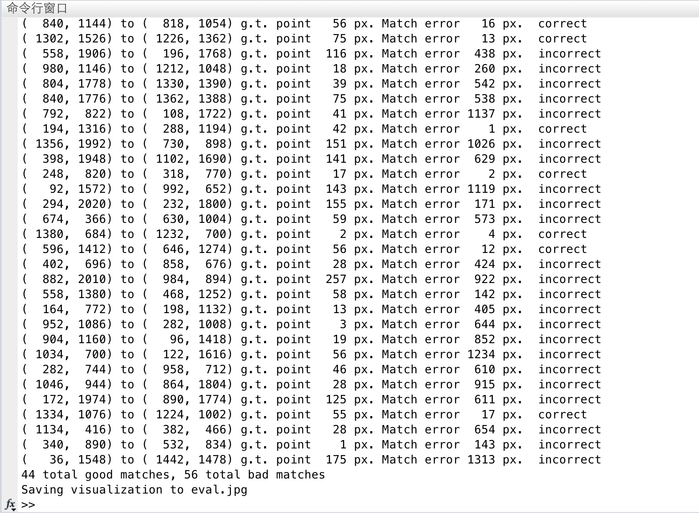| 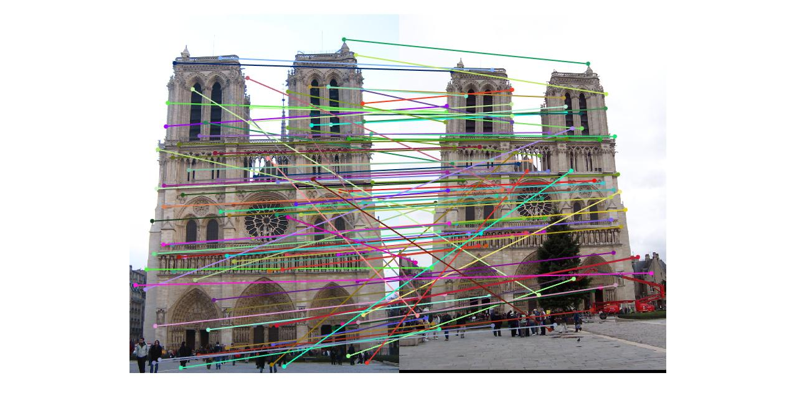 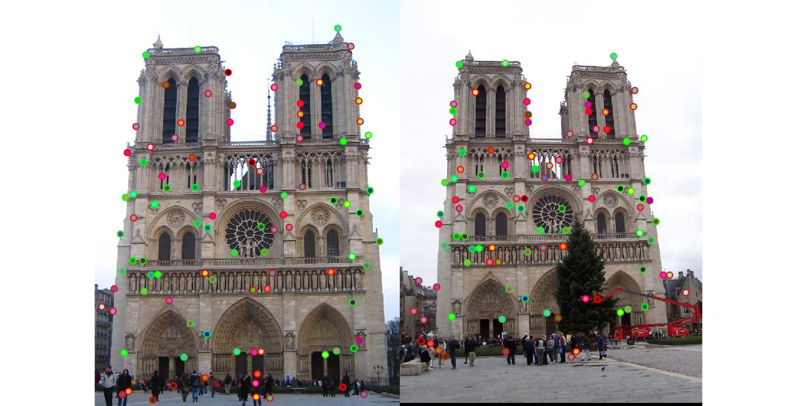 |
The matching result of Mont Rushmore images:
There are 63 good matches in the top 100 matches.
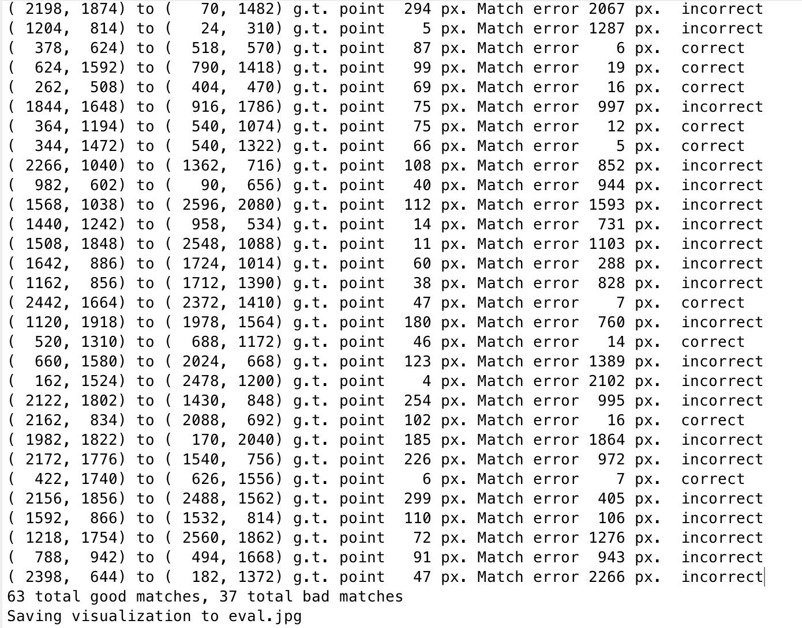| 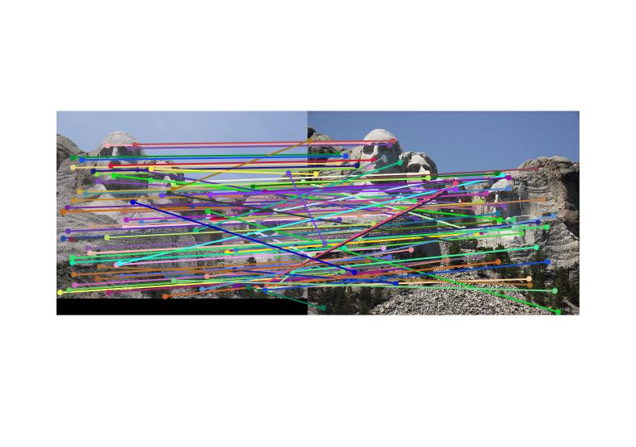 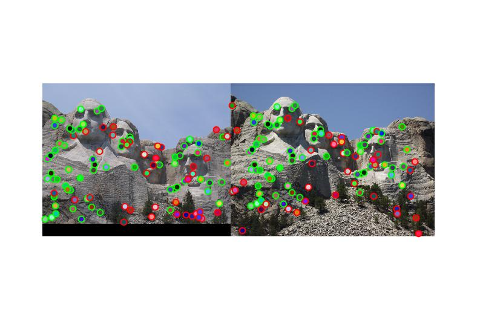 |
As for the pair of Episcopal Gaudi, the result is frustrating (one or two good matches among top 100), it appears to be out of the range these methods can handle.
The result of Capricho Gaudi images:
| 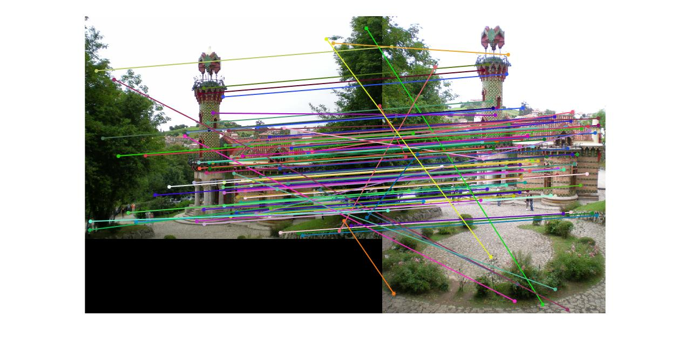 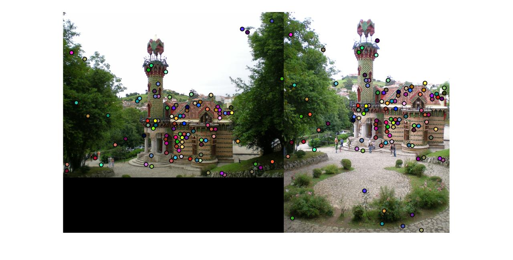 |
The result of Panthen Paris images.
| 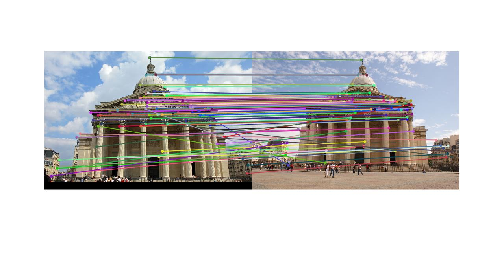 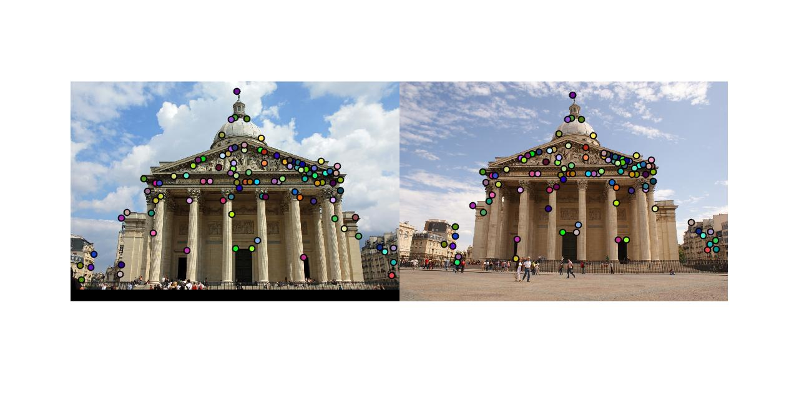 |
The paramters involved includes: threshold for local maxima, threshold for ANMS and threshold for NNDR.
For the results above:
During the procedure, I find the one that matters most is the NNDR threshold, hence I just keep the rest parameters same for comparison. In fact, the NNDR threshold can be lowered to improve the ratio of good matches to bad ones, but it will greatly supress the finding of total points (making result less than 100).
For instance, when NNDR threshold decrease to 0.8, the matching result of Notre Dame as follows:
Finding 47 good matches (former is 44), and 24 bad matches.
| 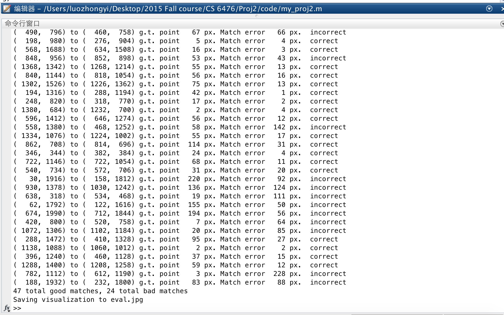 |
Also, the choice of NNDR threshold would greatly influence the calculation time (though the other parameters also have slight effects), the lower this value is, the slower the procedure goes. It makes sense, since lower value (more stringent value) would make it harder to find a match. But just as I mentioned, this will also supress the number of total pairs.
Above is all the work I have done in the project "Local Feature Matching". Thank you for your patience and please refer to code and images for details.